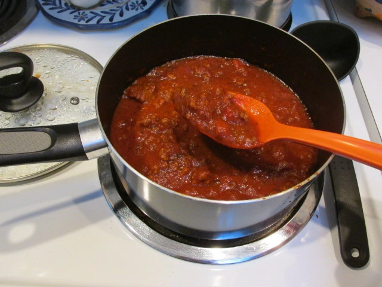

Raguu

A raguu is a tomato and meat based sauce.
Is usually used in recipes such as lasagna, pasta a la bolognesa and others.
Ingredients
- 1 can of peeled tomatoes
- 500Gr of ground beef
- 500Gr of ground pork
- 2 Carrots
- 1 Onion
- 1 Celery
- Extra virgin olive oil
- Salt
- Black pepper
Steps
- First cut the different vegetables in small cubes
- Heat the pot at medioum heat
- Add a couple tbs of ev olive oil
- Add both the ground beef and ground pork and season with some salt and black pepper
- Wait until the meat is golden and then add the vegetables with some salt
- When the onion starts to get a bit golden you can add the can of tomatos
- Add enough water so everything is immersed
- Decrease the heat to medium low and stir from time to time
- Let everything on the stove for 1h-2h